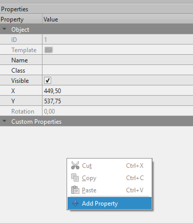

Using Tiled Custom Properties
Tiled allows you to add "custom properties" to various items such as layers, tiles, objects, or maps.
These custom properties can be:
- Standard types: string, integer, float, color, etc.
- Custom types: your own structures with sub-properties (which can themselves be standard or custom types)
With bevy_ecs_tiled, you can load these custom properties into your game and access them as regular Bevy Component or Resource.
This means you can define game logic directly in the Tiled editor and use it seamlessly in your Bevy game.
For example, you could:
- Associate a "movement cost" with a tile type
- Create an object representing your player or an enemy
- Add a generic "trigger zone" (e.g., damaging zone, victory zone)
- ...or anything else your game needs!
Overview
The user properties mechanism relies on Bevy's reflection system.
To use custom properties from Tiled in your game, you need to:
- Enable the
user_propertiesfeature in your localCargo.tomlfile. - Declare your custom types in Rust and make them reflectable.
- Run your game once to export these types as a
.jsonfile, readable by Tiled. - Import this
.jsonfile into the Tiled editor to make your types available as custom properties.
Once this is done, you can use your types directly in Tiled. When you load your map, the corresponding Component or Resource will be automatically inserted into your Bevy world.
For a quick demonstration, see the dedicated example.
Enabling the feature
Update your local Cargo.toml file to enable the user_properties feature:
[dependencies]
bevy = "0.16"
bevy_ecs_tiled = { version = "0.9", features = ["user_properties"] }
Note:
You may need to adjustbevyandbevy_ecs_tiledversions.
Declaring Types for Custom Properties
Each Tiled map, layer, tile, or object is represented by a Bevy Entity.
If you want to add custom properties to them, these properties should be a Component.
To make your custom types usable in Tiled, they must be "reflectable":
- Derive the
Reflecttrait for your type. - Register your type with Bevy.
Example:
use bevy::prelude::*; // Declare a component and make it reflectable #[derive(Component, Reflect, Default)] #[reflect(Component, Default)] struct BiomeInfos { block_line_of_sight: bool, ty: BiomeType, } // Any sub-type must also be reflectable, but does not need to be a Component #[derive(Default, Reflect)] #[reflect(Default)] enum BiomeType { #[default] Unknown, Forest, Plain, Mountain, Desert, } // Register your top-level struct in the Bevy registry fn main() { App::new() .register_type::<BiomeInfos>(); }
Tip:
Deriving Default is useful: you don't have to fill all fields in Tiled; missing fields will use the type's default value.
Importing Custom Properties into Tiled
Before you can add custom properties in Tiled, you need to export them from your app and import them into Tiled.
When running with the user_properties feature, your app will automatically produce a .json export of all types registered with Bevy.
By default, this file is named tiled_types_export.json and is created in your workspace root.
You can change the filename or disable export via TiledPluginConfig.
To import this file in Tiled:
- In Tiled, go to View → Custom Types Editor

- Click the Import button and select your
.jsonfile

- You will now see all custom types imported from your application

Adding Custom Properties in Tiled
Once imported, you can add custom properties to your map:
- Select the element (map, layer, object, etc.) you want to add a property to.
- In the "Custom Properties" panel, right-click and select Add Property
 - Choose the type you want to add and give it a name.
- For example, add the
BiomeInfostype from the earlier example:

- Set the values as needed for this element.
When you load the map, the corresponding Bevy entity will have the appropriate Component with the values you set.
Note:
Only add properties imported from Bevy. Properties created only in Tiled (ie. not exported from your app) will not be loaded in Bevy. You can also control which properties are exported from Bevy viaTiledPluginConfig
Special Considerations
- You can add custom properties to objects, layers, or the map itself.
To add properties to tiles, edit the tileset directly.
We currently do not support adding properties to the tileset itself. - For more on adding custom properties, see the official Tiled documentation.
- You can also add
Resources to your map.
Since resources are global and not attached to a specific entity, they are only supported as map-level properties.
If you add a resource to another Tiled element, it will be ignored.
With this workflow, you can design your game data visually in Tiled and have it automatically reflected in your Bevy game.